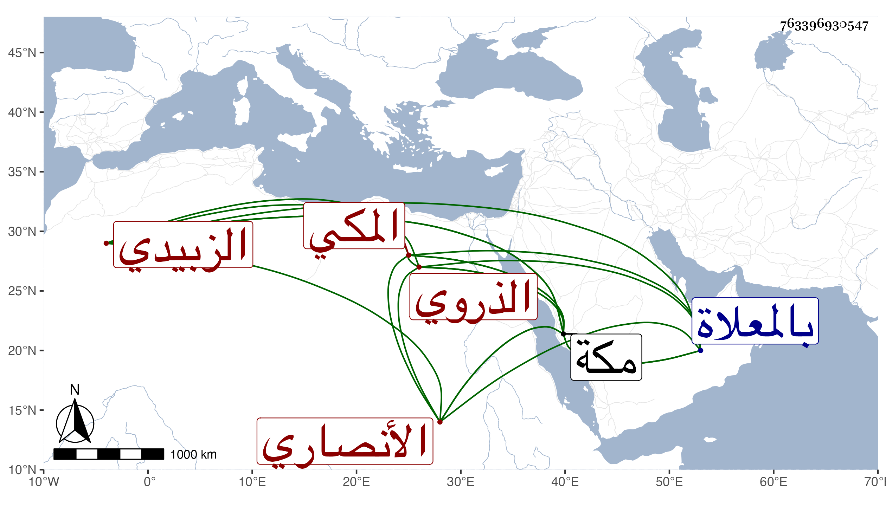

0902Sakhawi.DawLamic.ITO20230111-ara1.EIS1600.763396930547
Biography ID: 763396930547
375
عمر بن محمد أبي بكر بن علي بن يوسف الأنصاري الذروي الأصل المكي الزبيدي ويعرف بابن الجمال المصري ويلقب بالشجاع عني بالعلم قليلا وبالتجارة وسافر لأجلها إلى بلاد شتى وتردد منها لمكة وللحج غير مرة منها في سنة موته وكان ينسخ وليس بخطه بأس واتفق أنه أودع شيئا من دنياه مع بعض المسافرين فغرق فعظم أسفه وتعلل لأجله حتى مات في ذي الحجة سنة ثلاث وعشرين بمكة ودفن بالمعلاة وهو في عشر الأربعين أو بلغها . ذكره الفاسي .
